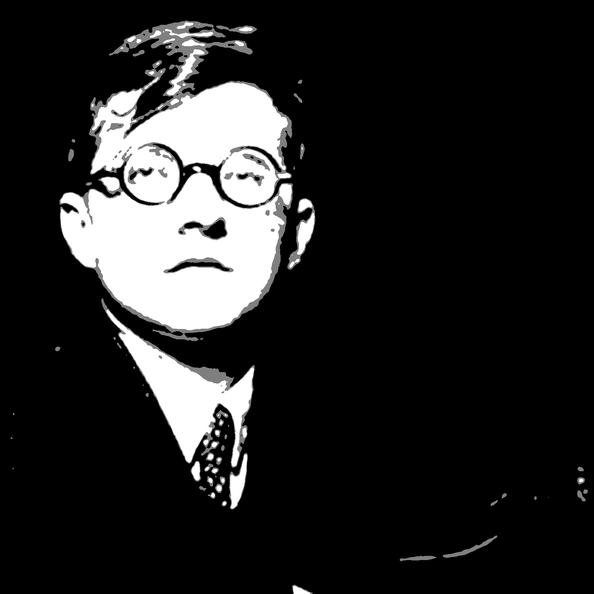

Songs for Lester
Classical Pieces for a Happy Dog
- Hanover Festival (Philip Sparke)
- Vesuvius (Frank Tichelli)
- Symphony No. 6, Op. 69: IV; Vivace (Vincent Persichetti)
- Chester Leaps In (Stephen Bryant)
- The Sorceror's Apprentice (Paul Dukas)
- Symphony No. 3, Op. 39; "The Tragic" (James Barnes)
- Festive Overture (Dmitri Shostakovich)
- Symphony No. 1 The Lord of the Rings (Johan De Meij)
- Lincolnshire Posy (Percy Grainger)
- The Planets; Op. 31: IV Jupiter, the bringer of jollity (Gustav Holst)
1. Hanover Festival
(Philip Sparke)
1999
The Hanover Wind Symphony, New Jersey, USA was founded in 1984 by its conductor Peter Boor. He commissioned Hanover Festival to celebrate the band’s 15th Birthday and the first performance took place on October 27th 1999. The piece starts with a solemn brass fanfare. Woodwinds join in and the music subsides into an expressive chorale. A climax is reached and the fanfare returns. Trumpets introduce an explosive vivo section, characterised by an energetic theme from the horns and low clarinets. A bridge passage with strong brass chords leads to a playful section that introduces a legato central theme under woodwind figures. This is taken up by the full band, the playful music returns and the original horn tune is reintroduced. Finally the opening fanfare returns, this time accompanied by music from the vivo section, until a fast and furious coda closes the work.
2. Vesuvius
(Frank Tichelli)
1999
Vesuvius is an aggressive, rhythmically active work; a dance representing the final days of the doomed city of Pompeii. This exciting work displays a variety of moods ranging from fierce canonic battle to quiet oases of sinuous melody. For strong bands, this is a real showpiece!
3. Symphony No. 6, Op. 69: IV; Vivace
(Vincent Persichetti)
1956
Persichetti's music draws on a wide variety of thought in 20th-century contemporary composition as well as Big Band music. His own style was marked by use of two elements he refers to as "graceful" and "gritty": the former being more lyrical and melodic, the latter being sharp and intensely rhythmic. Especially true of his early compositions, Persichetti said he "liked bumpy melodic lines and was crazy about music that moved along a zigzag path."
4. Chester Leaps In
(Stephen Bryant)
1997
Chester Leaps In is contructed from the juxtaposition of two divergent musical ideas: a chromatic, angular melodic motive, repeatedly interrupted by the harmonic simplicity of William Billings’ well-known hymn tune, “Chester.” This is the second incarnation of the piece (the original, written in 1994, was scored for two marimbas and piano).
5. The Sorceror's Apprentice
(Paul Dukas)
1897
Inspired by the Goethe poem, Dukas's work is part of the larger Romantic genre of programmatic music, which composers like Franz Liszt, Claude Debussy, Jean Sibelius and Richard Strauss increasingly explored as an alternative to earlier symphonic forms. Unlike other tone poems, such as La mer by Debussy or Finlandia by Sibelius, Dukas's work is, like works such as Till Eulenspiegel's Merry Pranks by Strauss, descriptively programmatic, closely following the events described in the Goethe poem. It was customary, in fact, to publish the poem as part of the orchestral score.
6. Symphony No. 3, Op. 39; "The Tragic"
(James Barnes)
1997
The Third Symphony stands today as one of Barnes' most personal and emotionally charged works. Commissioned by the US Air Force Band under Col. Alan Bonner, it was begun in earnest shortly after the tragic loss of the composer's baby daughter Nataile. The work progresses from the deepest darkness of despair all the way to the brightness of fullfillment and joy. The massive structure encompassed four movements: Lento; Scherzo; Fantasia "Natalie"; and a joyful "Finale."
7. Festive Overture
(Dmitri Shostakovich)

1954
The Festive Overture, Op. 96 is an orchestral work composed by Dmitri Shostakovich in 1954. Commissioned for the Bolshoi Theatre's celebration of the 37th anniversary of the October Revolution, the score has since become one of the most enduring of Shostakovich's occasional scores.
8. Symphony No. 1 The Lord of the Rings
(Johan De Meij)
1988
Symphony No. 1 "The Lord of the Rings" is the first symphony for concert band written by Johan de Meij. It premiered in 1988 with the Groot Harmonieorkest van de Belgische Gidsen conducted by Norbert Nozy. The symphony is based on literary themes from the fantasy novel by J.R.R. Tolkien. In 1989 the symphony won the Sudler Composition Award.
9. Lincolnshire Posy
(Percy Grainger)
1937
Lincolnshire Posy is a musical composition by Percy Grainger for concert band commissioned in 1937 by the American Bandmasters Association.[1] Considered by John Bird, the author of Grainger's biography, to be his masterpiece, the 16-minute-long work has six movements, each adapted from folk songs that Grainger had collected on a 1905–1906 trip to Lincolnshire, England.
10. The Planets; Op. 31: IV Jupiter, the bringer of jollity
(Gustav Holst)
1916
In this movement Holst portrays Jupiter's supposedly characteristic "abundance of life and vitality" with music that is buoyant and exuberant.Nobility and generosity are allegedly characteristics of those born under Jupiter, and in the slower middle section Holst provides a broad tune embodying those traits.